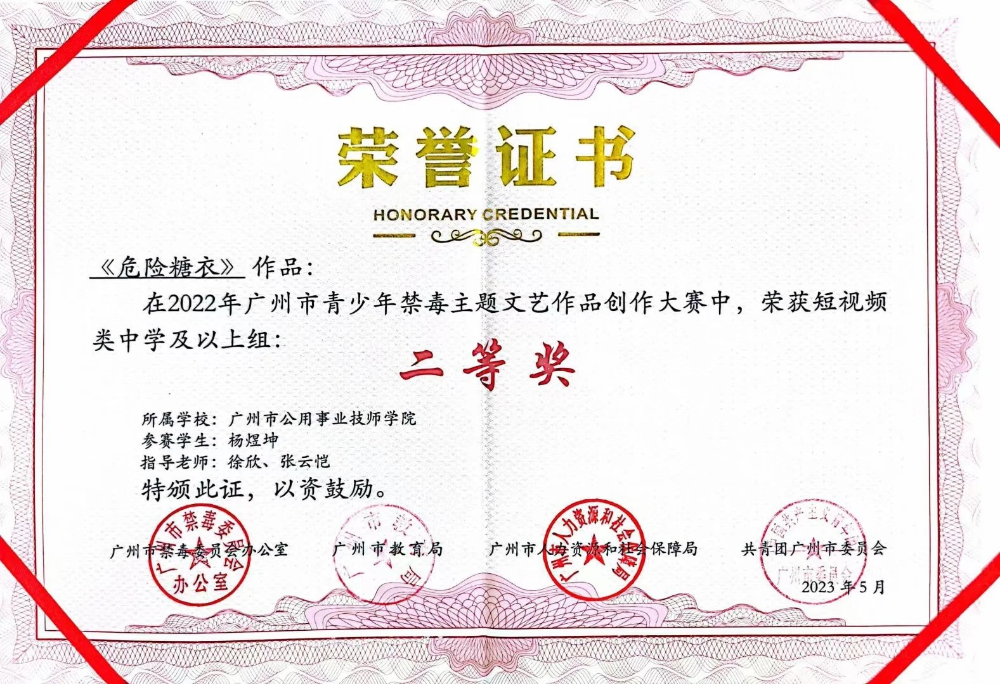

Project / 2022.11
广州市禁毒主题文艺作品创作
- 单位
- 广州市公用事业技师学院
- 担任
- 作编曲 · 指导老师
- 作品
- 短视频《危险糖衣》

01荣誉证书 · 二等奖
《危险糖衣》荣获 2022 年广州市青少年禁毒主题文艺作品创作大赛短视频类（中学及以上组）二等奖。指导老师：徐欣、张云恺。由广州市禁毒委员会办公室、广州市教育局、广州市人力资源和社会保障局、共青团广州市委员会颁发，2023 年 5 月。
Certificate of Honor — “Dangerous Sugarcoat” won Second Prize in the short-video category (secondary school and above) of the 2022 Guangzhou Youth Anti-Drug Themed Arts Creation Competition. Supervisors: Xu Xin, Zhang Yunkai. Issued May 2023 by the Guangzhou Narcotics Control Commission Office, Guangzhou Municipal Education Bureau, Guangzhou Human Resources and Social Security Bureau, and the Communist Youth League Guangzhou Committee.
表彰状 — 『危険な糖衣』が2022年広州市青少年禁毒テーマ文芸作品創作コンテスト・ショート動画部門（中学以上の部）で二等賞を受賞。指導教員：徐欣、張雲愷。2023年5月授与。